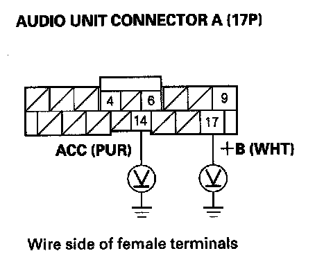
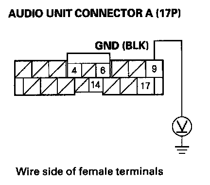

Power Switch Will Not Turn ON (No Information Display and No Sound)
Power switch will not turn ON (No information display and no sound)NOTE: Always check the connectors for poor connections or loose terminals.
1. With the ignition switch ON (II), push the power switch ON to see if audio unit turns ON.
Does the audio unit display operate properly, and the audio unit sound normal?
YES - Intermittent failure, the system is OK at this time.
NO - Go to step 2.
2. Turn the ignition switch OFF.
3. Check the No. 5 (10 A) fuse and No. 32 (10 A) fuse in the under-dash fuse/relay box.
Are the fuses OK?
YES - Go to step 4.
NO - Replace the fuse, and recheck.
4. Remove the audio unit. Check that the audio unit connectors are properly connected.
Is it connected properly?
YES - Go to step 5.
NO - Repair poor connections and reconnect the connector, and recheck the function.
5. Disconnect the audio unit connector A (17P).
6. Turn the ignition switch ON (II).

7. Measure the voltage between No. 14 and 17 terminals of audio unit connector A (17P) and body ground.
Is there battery voltage?
YES - Go to step 8.
NO - Repair open in the wire(s) between the No. 5 (10 A) and No. 32 (10 A) fuses in the under-dash fuse/relay box and the audio unit.
8. Reconnect the audio unit connector A (17P).

9. Measure the voltage between audio unit connector A (17P) terminal No. 9 and body ground.
Is there less than 0.1 V?
YES - Audio unit is faulty, replace the audio unit.
NO - Repair open in the wire between the audio unit connector A (17P) terminal No. 9 and body ground (G504).